MIDI Editing¶
In this chapter you will learn MIDI editing. There are two aspects to MIDI editing. You can, of course, edit individual MIDI notes, but you can also edit the MIDI clip. Editing a MIDI clip is similar to editing an Audio clip, but with a few key differences. We will go over both approaches in this chapter.
Many of the tools for working with clips work much like they do with Audio clips. Each MIDI clip header has several drag handles. Let's take a look at how they work.
Trimming MIDI Clips¶
To trim a MIDI clip, drag one of the trim handles left or right. The trim handles are the hollow arrows at the left and right of the MIDI clip header.
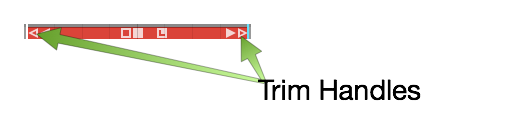
Trim MIDI Clips by Dragging a Trim Handle
📝 Note: One difference between Audio clips and MIDI clips is that the MIDI clips don't have fade handles.
Moving MIDI Clips¶
To move a MIDI clip forward or backward in time, drag from the header area. Don't drag starting from any of the icons, but instead drag from the blank space in the header area.
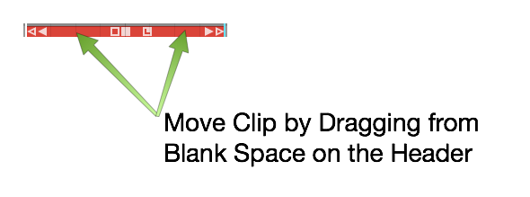
Moving a MIDI Clip
Moving a MIDI Clip Track-to-Track¶
To move a MIDI clip track-to-track, grab the header area and drag it up or down. To move track-to-track without affecting the timing, hold down Shift as you drag.
Slip Editing MIDI Clips¶
The three solid color handles are used for slip editing: left arrow, right arrow, and the box. The essential tool for slip editing is the solid box in the center of the header. Grab the solid box and drag, in order to slip edit the notes within the frame of the window.
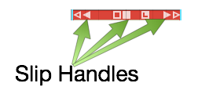
MIDI Clip Slip Handles
Use the left solid arrow to slip the notes later in time, while leaving the ending of the clip anchored. The right solid arrow works the opposite way. You can slip the end of the clip, while leaving the beginning of the clip anchored.
Reframing a MIDI Clip¶
The hollow box tool in the center of a MIDI clip allows you to reframe the entire window of the clip, leaving the notes in their original place. This is done by dragging the hollow box left or right.
Splitting a MIDI Clip¶
To split a MIDI clip, select it then position the cursor at the time you want to make the split. Press the slash key (/). This is the exact same workflow you use for splitting Audio clips.
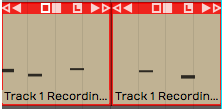
Split MIDI Clips Using the Slash Key
You can also split using the Split Clips actions at the right side of properties. The various actions give you more control over splitting.
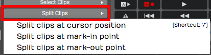
Split Actions Button in properties
📝 Note: As you split MIDI clips, any notes that are sustained across the split area are separated into two notes.
You can even split a mixture of Audio clips and MIDI clips across multiple tracks, by selecting a combination of them at once.
The MIDI Note Editor¶
As you increase the vertical size of a track holding MIDI clips, you'll see that there's a point at where it switches to the inline MIDI note editor. This gives you a comprehensive view of the notes contained within the MIDI clip. This type of view is commonly called a piano roll view (PRV).
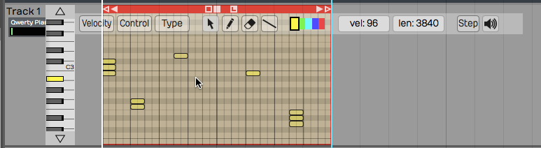
The MIDI Note Editor
Another way to see the MIDI note editor is to double-click on the MIDI clip header to toggle track height.
📝 Note: Clip header double-click behavior is dependent on a global setting. Go to the Settings tab, General page and find the Track Resizing property. You can choose a number of options, based on how you would like that resizing to occur when you double-click. This setting also holds for audio tracks.
Setting the Number of Octaves & Note Height¶
You can adjust how many octaves you see on the MIDI editor in the Options menu. By default Options > Default MIDI editor vertical scale is set to 2 octaves, a reasonable starting point. If you want you can set this to show more or fewer octaves.
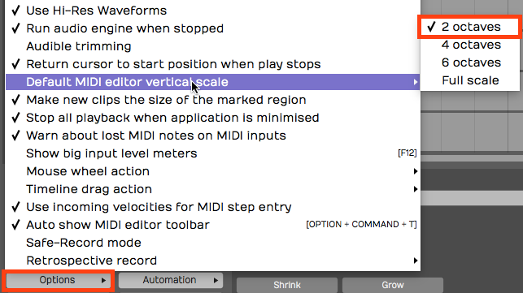
Default MIDI Editor Vertical Scale Setting
To fine tune the vertical size of MIDI notes, drag the arrows above and below the piano graphic.
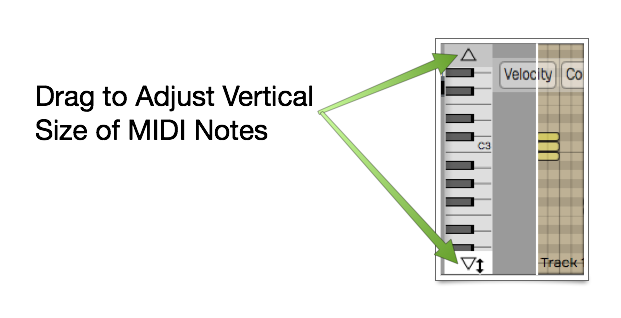
Use Arrows to Adjust Vertical Size
Mouse Wheel Options for MIDI Editing¶
You can use your mouse wheel to scroll vertically within the MIDI editor. During mixing you may prefer to disable this function, in order to prevent scrolling within the MIDI clips unintentionally.
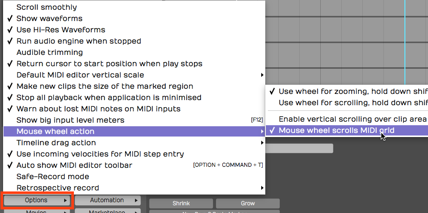
Mouse Wheel MIDI Scrolling Setting
You may find it's generally helpful to have MIDI scrolling on during MIDI editing. You'll find this setting in the menu under Options > Mouse wheel action > Mouse wheel scrolls MIDI grid.
Basic MIDI Editing - Pitch¶
Next, let's look at the tools for editing the actual MIDI notes. In general, editing works by selecting notes and then doing an action.
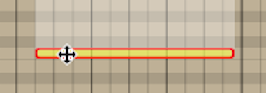
Select a Note and Drag Up or Down to Change Pitch
The most basic edit? Click a note to select it. Drag it up or down to change the pitch.
Per Note Automation¶
As you start to drag MIDI notes around, you will immediately see the per-note controller editing area appear above or below selected notes.
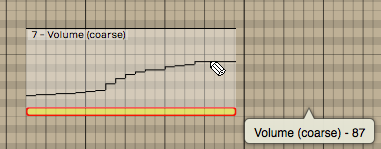
Drawing Per Note Automation
If you don't see the per-note automation editing area, you can turn it on and off in properties.
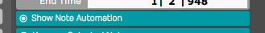
Turn Per Note Automation Editing On or Off
To begin, select any single note. The automation editing area will appear for the full length of the note. By default you will be editing Volume (controller 7). Select the pencil tool and draw in the desired automation curve by click-dragging over the editing area.
📝 Note: You need to select the pencil tool to draw in the per-note automation.
The curve will appear as steps based on the current snap resolution. The snap resolution is set by the zoom level; To draw in a more detailed curve, zoom in more.
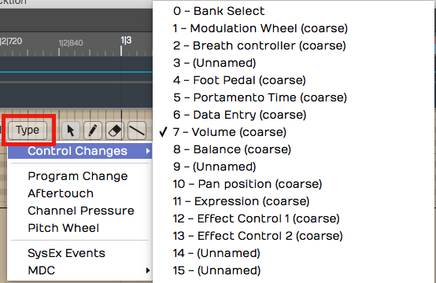
Selecting the Controller Type for Per Note Automation
You can select any other control by clicking the Type button on the MIDI editor toolbar. This type of editing gives you detailed control over performance details and articulations.
📝 Note: Not all virtual instruments respond to this type of data.
Nudging Notes¶
Nudging works much like it does for Audio clips and MIDI clips. You hold down Shift and use the arrow keys. Shift-up and Shift-down change the pitch. Shift-left and Shift-right change the timing.
Nudging is particularly helpful when changing the pitch, since there there's no chance of altering the timing of the note.
💡 Tip: Cmd + Z / Ctrl + Z works as undo for most editing operations.
Note Length¶
You can trim the length of a note by grabbing the right edge and dragging it left or right.
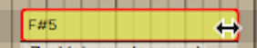
Trimming a MIDI Note
Snapping During Note Editing¶
Many of these editing operations will snap to the grid as long as you have Snap enabled. To edit freely, disable Snap. The keyboard shortcut Q enables or disables snapping.
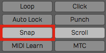
Note Editing Will Snap if Snap is On
Copying and Duplicating Notes¶
To copy a note, hold down Cmd / Ctrl and drag the note to create a copy. Another way to do this is with the Duplicate keyboard shortcut. First select the note that you would like to copy, make sure the cursor is where you'd like the copy placed and then hit the keyboard shortcut D.
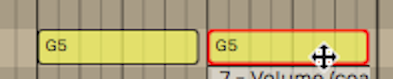
Copying a Note
Adjusting Pitch and Velocity¶
Another way to adjust pitch and velocity is to select the note and then edit the values directly in properties. Both Pitch and Velocity can easily be edited this way.
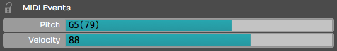
Adjust Pitch and Velocity in properties
Note Start, Length, & End¶
You can also make very precise adjustments to the Length, Start Time, and End Time by editing the values directly in properties for the selected note.
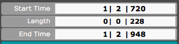
Start, Length, & End Settings in properties
The Pencil Tool¶
The pencil tool is used to draw in notes. Simply select the pencil tool and then start painting in notes where you'd like them to appear on the piano roll.
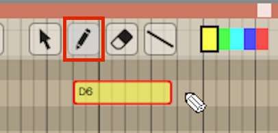
Draw in New Notes with the Pencil Tool
The Eraser Tool¶
Use the eraser tool to swipe over any series of notes that you would like to erase.
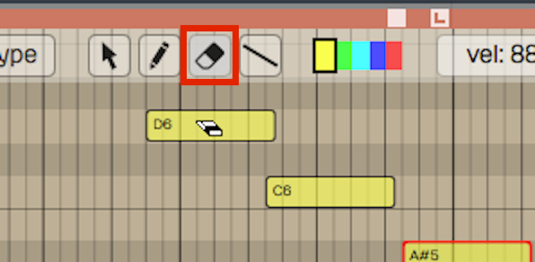
The Eraser Tool
The Line Tool¶
There's also a line tool. We usually recommend using this for drawing in controllers, but it is also possible to use it for notes as well. Draw a line to create a stepped series of notes.
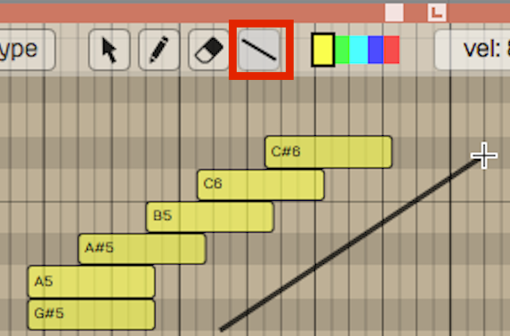
Draw a Series of Notes with the Line Tool
Note Colors¶
The color selection along the top edge of the MIDI editor allows you to select set a note color. Select a group of notes, click on a color and then it will change those notes to that color. It doesn't affect playback, but it gives you a way to visually organize a sequence. For example, when programming drums you could make snares, hi-hats, and kick drum all different colors.
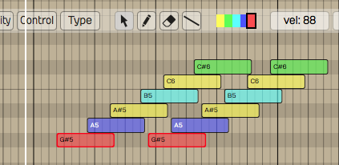
Note Colors
Selecting Multiple Notes¶
Selecting multiple notes is easy. Use the arrow tool and drag a selection around any group of notes that you'd like to select together.
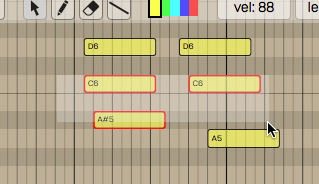
Note Multiple Selection
You can also add or remove notes from a multiple selection by holding down Shift (or Cmd / Ctrl) then clicking additional notes you'd like to toggle in and out of the selection.
To select an entire row of notes that are the same pitch, hold down Cmd / Ctrl and click on the PRV keyboard key corresponding to that row of notes; doing so selects the full row of notes.
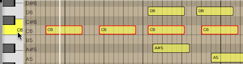
Selecting a Row of Notes with Cmd / Ctrl
Once you have a multiple selection, move all the notes in time or by pitch by dragging with the arrow tool. Alternatively, you can change values in properties that will apply to all notes in the selection. Nudge also works on well on a multiple selection of notes (Shift plus the arrow keys).
Editing the Note Velocity¶
To quickly change the velocity of a note, select the note and then select a value from the Velocity drop down menu. This gives you a variety of preset values at popular levels.
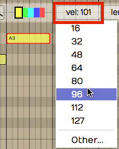
Quickly Set Note Velocity
If you choose Other, from the velocity drop down, you can type in whatever value you want from 0 to 127.
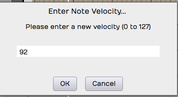
You'll See this if you Select Other**
💡 Tip: Here's another trick way to adjust velocity. Select a note then hold Shift as you drag up and down over the note. Notice the Velocity value changing in properties as you drag.
Step Entry Mode¶
When the Step button is toggled on, the MIDI clip goes into step entry mode. In this mode, any notes you play to the track will be entered at the cursor position. Then, the cursor will advance to the next step based on the Snap grid resolution. You can adjust that based on the level of zoom.
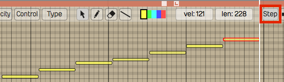
Step Entry Mode
Hearing Notes While Editing¶
You have the option to trigger notes that are being moved so you can hear the pitch. You can enable or disable this using the speaker icon at the far right at the top of the MIDI editor tool bar.
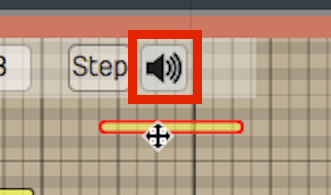
Enable Speaker Button to Trigger Notes During Editing
The Velocity Editor¶
You can edit MIDI note velocity from the velocity area below the PRV. Click the Velocity button at the left of the MIDI editor toolbar to expose the velocity editor. For the selected note, grab the stalk which represents the velocity and drag it up or down. You will notice the Velocity parameter moving in properties for that note as you drag.
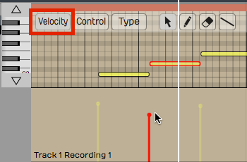
The Velocity Editor
You can also edit multiple velocities together by first selecting several velocities. Say we want to edit the velocity of all the C4s. Hold down Cmd / Ctrl and select all the C4s, then, just grab one of them and they will all adjust together.
Editing other Controller Data¶
You can use a view similar to the velocity editor with any kind of controller. Click the Control button and then click Type to choose which controller to edit.
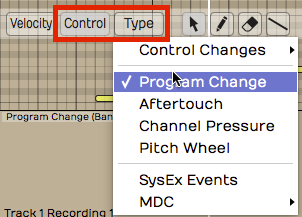
Editing Other Controller Data
Example editing aftertouch: In the MIDI editor click Control > Type > Channel Pressure. Now the channel pressure data will appear in the same way velocity appears.
The MIDI Event List¶
For surgical, numbers-first editing, open the MIDI Event List. It's a floating, resizable table of every event in the currently selected MIDI clip, and it follows your selection — click a different clip and the list updates to match. The list and the piano roll share a selection, so a note you highlight in one is highlighted in the other.
This is a Waveform Pro feature (version 12 and later).
Open it with the command Show or hide the MIDI Event List window, or from the View menu's Show MIDI Event List item.

The MIDI Event List window
Across the top is an add-event menu (Add note, Controller, Program Change, Aftertouch, Pitch Wheel, Channel Pressure, or SysEx) alongside Transpose, Quantise, Groove, and Chords menus that act on the selected events. Along the bottom are seven filter toggles — Notes, Controller, Program Change, Aftertouch, Pitch wheel, Channel Pressure, SysEx — all on by default, so you can hide event types you don't want to wade through.
The columns change with the event type:
- Notes — a mute toggle, Time, Type, Pitch (0–127), Velocity (0–127), Release velocity (0–127), and Length.
- Controllers — Time, Type, Controller type (Program Change, Aftertouch, Pitch Wheel, Channel Pressure, or CC 0–127), and Value (0–16383).
- SysEx — Time, Type, and an editable Data field.
💡 Tip: The Event List is the place to type exact values — handy when you need a controller at precisely 64, or a note nudged to an exact tick that's awkward to hit by dragging.
MIDI Controller Mappings¶
The MIDI Controller Mappings window lets you drive plugin parameters from a hardware MIDI controller's knobs and faders. Each row binds one incoming MIDI controller (CC) to one parameter in your edit.
Open it from the Automation menu's Create MIDI controller mappings… item, or with the command Show MIDI controller mappings window.

The MIDI Controller Mappings window
When you first open it the window looks empty -- that is normal. There is always one blank row waiting at the bottom of the list, and that row is how you add a mapping. Click either half of it to begin (see below); as soon as you fill a row in, a fresh blank row appears beneath it, ready for the next mapping. So the "empty" window already contains everything you need to start.
Each row has two halves:
- Left half (the controller) — Click it to enter MIDI-learn (the cell reads (Move a MIDI controller)); the next CC that arrives from your hardware is captured and bound to this row.
- Right half (the parameter) — Click Choose Parameter… for a hierarchical menu of everything you can map: Master Plugins, Racks, and each track's plugins and their parameters, plus an Add all parameters shortcut. The same menu saves, loads, and deletes presets.
💡 Tip: To set up a controller quickly, click the right half of the blank row, open a plugin's submenu, and choose Add all parameters -- a row is created for every parameter of that plugin in one step. Then just MIDI-learn the hardware controllers you want for each.
Press Delete with a row selected to remove that mapping. There's always a blank row at the bottom ready for the next binding. Mappings belong to the edit you set them up in, while presets are global and available to every edit.
📝 Note: The window shows mappings for the focused edit only, and it doesn't switch when you change focus to a different edit.
The SysEx Lane¶
System Exclusive (SysEx) messages are manufacturer-specific MIDI data — often used to recall a hardware synth patch or send a device-specific command. Waveform shows them on a dedicated controller lane in the MIDI editor, where each SysEx event appears as a diamond on a timeline.
Open the lane from the MIDI editor's controller-lane menu and choose the SysEx option. The lane header has a Close button and a Menu. Use the Select, Pencil, and Eraser tools to place, move, and delete events — a pencil click creates a new event with four zero bytes — and snapping applies just as it does elsewhere in the editor.
📝 Note: The lane is for placing and timing SysEx events. To edit the actual bytes of a message, use the Data field in the MIDI Event List (described above).
Moving On¶
Those are the fundamentals of MIDI editing. We're going to get into quantizing MIDI notes in the next chapter.